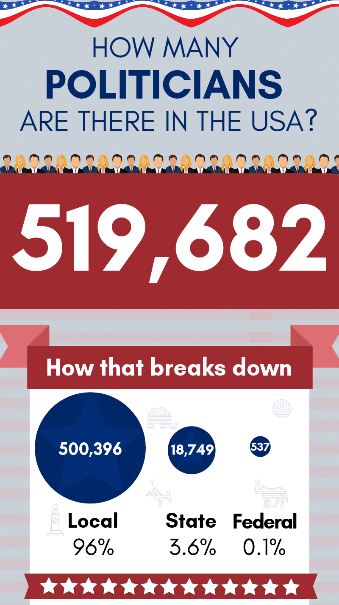
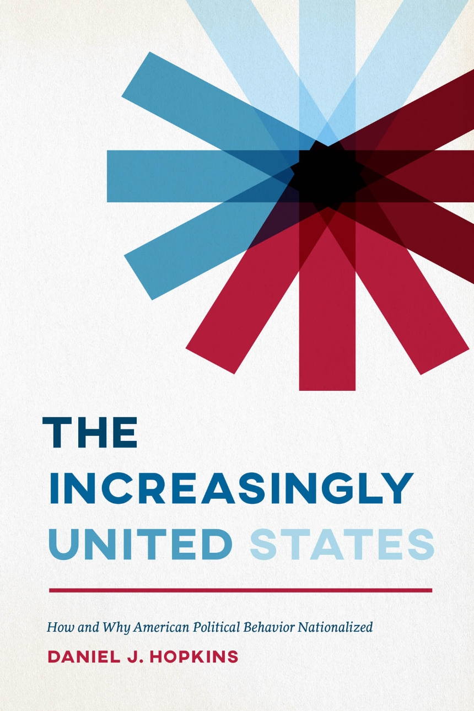
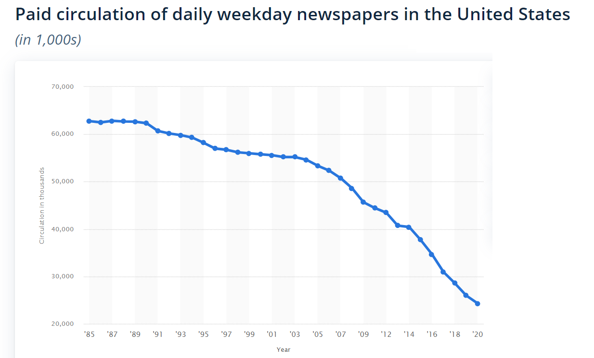
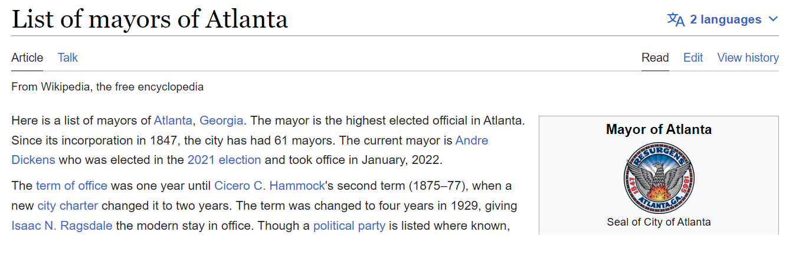

Strengthening Local Democracy
Today’s Game
- Write down as many local elected officials as you can name (e.g. mayors, city councilmembers, school board members, county commissioners).
–
- Write down as many federal elected officials as you can name (e.g. president, members of Congress).
–
???
Suffice to say, this is deeply at odds with the way that the founders thought we’d be interacting with our democracy.
It’s Strange We Can’t Name More Local Politicians…

???
https://poliengine.com/blog/how-many-politicians-are-there-in-the-us

Today
Two big questions today:
–
- Why is American politics so nationalized?
–
- How can local democracy function if no one is paying attention to it?
Nationalization
.pull-left[ - Voters pay much more attention to national level political issues.
When we pay attention to local level political issues, it’s often through the lens of national political fights.
It wasn’t always this way! (The Founders would probably be pretty surprised).
]
.pull-right[

]
Why has politics nationalized?
–
- In the 18th century, information traveled at the speed of a horse.
–
Newspapers served local audiences, funded by subscriptions and advertisements.
It makes sense that you’d know more about local politics and less about national politics.
–
- First television, then the Internet, changed the way Americans consumed news.
–
Because these platforms reach a national (or global) audience, there’s an incentive to focus on news that appeals to the widest possible audience.
Thus a focus on national news.
Decline of Local News
Losing ad and subscription revenue to TV/Internet and national papers like the New York Times, local newspaper circulations take a nose dive.

???
https://www.statista.com/statistics/183422/paid-circulation-of-us-daily-newspapers-since-1975/
Decline of Local News
It’s tough to definitively say what effect the decline of local news has on people’s political behavior, but there are some clever ways to research it.
–
–
In areas where you get your TV news from a another state, people are less knowlegeable about their own state/local politicians, and less likely to split ticket vote .cite[(Moskowitz 2021)].
class: center, middle inverse
How does democracy work when no one’s paying attention?
How does democracy work when no one’s paying attention?
–
Well, the usual answer is political parties .cite[(Aldrich 1995)].
–
Voters can’t be expected to pay attention to every political issue.
Parties give voters a clear choice; most voters can basically tell you what the two parties stand for, and which they prefer.
–
But at the local level, there is basically no meaningful party competition.
.pull-left[ ]
.pull-right[  ]
]
–
Even in places where there’s meaningful party competition for mayor (e.g. New York City), the city council tends to be dominated by one party or another .cite[(Schleicher 2007)].
???
But at the local level, this isn’t the way that political competition plays out!
Charleston, Atlanta. Combination of Southern Democratic dominance in the early 20th century, followed by the sort of partisan sorting we discussed a few weeks ago.
Why no local political parties?
- Why don’t we have local level political parties?
–
- Maybe Republicans aren’t competitive in Atlanta mayoral elections, but maybe the Green Party could be?
–
- Reasons are multifaceted .cite[(Schleicher, 2007)], but basically this problem comes from the top.
–
In winner-take-all presidential systems, there’s a strong incentive for different political factions to coalesce into two parties (Duverger’s Law).
Local elected officials with state or national political ambitions must join one of the two parties.
Why no local political parties?
Another reason we don’t have party competition at the local level: in most places it’s illegal!
–
- Only 17% of the 1,638 cities surveyed by .cite[Tausanovitch & Warshaw (2014)] hold partisan elections.
–
- In the early 20th century, Progressive reformers deliberately set out to weaken partisan politics at the local level, in response to the dominance of party machines in major US cities.

–
- In addition to nonpartisan elections, there were a number of reforms instituted in the early 20th century designed to weaken machines and make local politics more professional / like the private sector.
Municipal Political Institutions
Some of these Progressive reforms we’ve already discussed:
–
Special-purpose districts .cite[(Berry 2009)]
Off-cycle election timing .cite[(Anzia 2012)]
–
A few others to discuss today:
–
Council-Manager systems
At-Large Elections
Term Limits
???
Like the CEO at a publicly traded corporation, who serves at the pleasure of the board.
class: center, middle, inverse
Council-Manager Systems vs. “Strong Mayors”
Council-Manager Systems
.pull-left[
]
.pull-right[ Manager:
Responsible for day-to-day administration of city.
Appointed by the city council (akin to the CEO of a publicly-owned corporation).
Mayor:
More like the “Speaker of the House”.
Presides over city council meetings, sets the political agenda.
]
Council-Manager Systems
The idea is that day-to-day public management is out of the hands of politicians and in the hands of professionals.
–
- Some evidence that city managers are more insulated from political pressure.
–
- .cite[Malesky et al. (2015)] find that cities with strong mayors spend more on corporate subsidies than those with council-manager systems. They have a stronger “incentive to pander”.
class: center, middle, inverse
At-Large vs. District Elections
At-Large vs. District Elections
Early 20th century reformers pushed for at-large city council elections to weaken the power of “ward bosses”.
–
- We’re already familiar with district based systems. Split up the city into districts of roughly equal population and elect your councilmembers from each one.
–
- At-large elections have a single slate of candidates for every voter in the city.
–
This matters for descriptive representation. It is difficult to win at-large elections if you are a numerical minority.
At-large systems became particularly popular in Southern cities as the share of Black voters grew .cite[(Trebbi et al. 2008)].
District elections increase diversity on councils if minority groups are geographically concentrated .cite[(Trounstine & Valdini 2010)].
class: center, middle, inverse
Off-Cycle vs. On-Cycle Elections
Off-Cycle vs. On-Cycle Elections
- In the early 20th century, Progressive reformers pushed to separate local elections from state and national elections .cite[(Anzia 2012)].
–
- Today, 80% of cities hold their elections off-cycle.
–
- The biggest effect this has is on turnout .cite[(Berry & Gerson 2010)].

Off-Cycle vs. On-Cycle Elections
It also influences who turns out to vote.
–
People with a strong interest in the election outcome more likely to turnout off-cycle .cite[(Anzia 2011)].
People who turn out to off-cycle elections more likely to be wealthy, white, and Republican .cite[(Kogan et al. 2018)].
–
But the biggest effect is on the share of senior citizens.
- Goes from 1/3 of the electorate in presidential elections to roughly 1/2 the electorate in off-cycle special elections .cite[(Kogan et al. 2018)].
–
This can have downstream effects on policy.
–
Senior citizens tend to be more pro-police .cite[(Goldstein 2021)].
They also tend to be more “NIMBY”, opposed to new housing construction .cite[(Ornstein 2019)].
class: center, middle, inverse
Term Limits
Term Limits
–
- Roughly 19% of US municipal governments place term limits on elected officials .cite[(Tausanovitch & Warshaw, 2014)].
–
- But if you thought that term limits curb corruption, well, I have bad news:
–
Term Limits
–
- Term-limited Brazilian mayors “misplace” more federal money than first-term mayors .cite[(Ferraz & Finan 2011)].
–
- We can tell by comparing cities where incumbent mayors barely won re-election (right) with those where incumbent mayors barely lost (left).
–
class: center, middle, inverse
Journal Club This Week
Journal Club: Readings
Moskowitz, Daniel J. (2021). “Local News, Information, and the Nationalization of U.S. Elections.”
Schleicher, David (2007). “Why Is There No Partisan Competition in City Council Elections?: The Role of Election Law.”
Reid, Joseph D., and Michael M. Kurth (1992). “The Rise and Fall of Urban Political Patronage Machines.”
Jensen, Nathan M., Edmund J. Malesky, and Matthew Walsh (2015). “Competing for Global Capital or Local Voters? The Politics of Business Location Incentives.”
Trounstine, Jessica, and Melody E. Valdini (2008). “The Context Matters: The Effects of Single-Member versus at-Large Districts on City Council Diversity.”
Kogan, Vladimir, Stephane Lavertu, and Zachary Peskowitz (2018). “Election Timing, Electorate Composition, and Policy Outcomes: Evidence from School Districts.”
Ferraz, Claudio, and Frederico Finan (2011). “Electoral Accountability and Corruption: Evidence from the Audits of Local Governments.”
???
Full citation details:
Moskowitz, Daniel J. (2021). “Local News, Information, and the Nationalization of U.S. Elections.” American Political Science Review 115(1): 114–29.
Schleicher, David (2007). “Why Is There No Partisan Competition in City Council Elections?: The Role of Election Law.” Journal of Law & Politics 23: 419.
Reid, Joseph D., and Michael M. Kurth (1992). “The Rise and Fall of Urban Political Patronage Machines.”
Jensen, Nathan M., Edmund J. Malesky, and Matthew Walsh (2015). “Competing for Global Capital or Local Voters? The Politics of Business Location Incentives.” Public Choice 164, no. 3–4: 331–56.
Trounstine, Jessica, and Melody E. Valdini (2008). “The Context Matters: The Effects of Single-Member versus at-Large Districts on City Council Diversity.” American Journal of Political Science 52(3): 554–69.
Kogan, Vladimir, Stephane Lavertu, and Zachary Peskowitz (2018). “Election Timing, Electorate Composition, and Policy Outcomes: Evidence from School Districts.” American Journal of Political Science 62(3): 637-651.
Ferraz, Claudio, and Frederico Finan (2011). “Electoral Accountability and Corruption: Evidence from the Audits of Local Governments.” The American Economic Review 101, no. 4: 1274–1311.
Journal Club: Questions To Answer
Each team will answer the following questions about their paper, then teach the paper to members of the other teams.
What is the research question?
What is the authors’ theory?
What evidence supports the theory?
Why should we care?